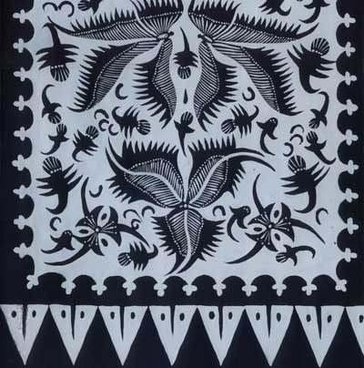
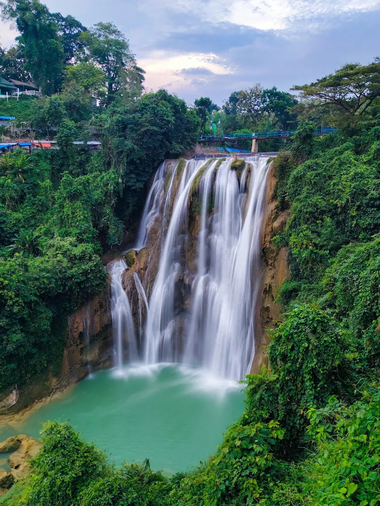

Mengenal Keunikan Tuban
Sugeng Enjing 🌅
Selamat datang di GEDOG-DEX. Temukan kekayaan budaya, wisata, kuliner, kesenian, dan alam Kabupaten Tuban, lalu ikut menjaga warisan ini agar tetap dikenal generasi berikutnya.

Keindahan tenun tangan & canting cantrik warisan leluhur
Temukan cerita budaya, pesona alam, kuliner khas, kesenian, dan cara ikut melestarikan warisan Tuban.
Arahkan kamera ke kain batik untuk membandingkan pola visualnya dengan referensi batik yang tersedia pada prototipe scanner.
Pola yang tertangkap belum cukup mirip dengan referensi batik yang tersedia. Coba dekatkan kamera, ratakan kain, dan pastikan pencahayaan cukup.
Skor ini adalah perkiraan kemiripan fitur visual terhadap satu gambar referensi, bukan persentase kepastian atau akurasi model.
Kabupaten Tuban di pesisir utara Jawa Timur memiliki warisan budaya yang terbentuk dari pertemuan tradisi Jawa, kehidupan pesisir, jalur perdagangan, dan perkembangan Islam. Keunikan ini terlihat dalam kain, kesenian, kuliner, tempat bersejarah, serta bentang alamnya.
Batik Gedog dikenal karena proses tradisionalnya yang menggabungkan pembuatan benang, penenunan kain, dan pembatikan. Bunyi alat tenun kayu yang terdengar seperti “dog-dog” sering dikaitkan dengan nama Gedog. Kain bertekstur khas ini menjadi penanda keterampilan perajin, terutama di kawasan Kecamatan Kerek. Motif dan warna dapat terinspirasi dari lingkungan, tumbuhan, hewan, serta kehidupan masyarakat.
Upaya pelestarian: belajar mengenali motif, membeli produk dari perajin lokal, menggunakan batik dalam kegiatan sekolah atau acara budaya, serta menghargai proses kerja yang membutuhkan ketelatenan.
Motif batik Tuban memiliki ragam bentuk dan karakter. Beberapa motif terinspirasi dari alam, seperti tumbuhan dan hewan, sementara motif lain menampilkan pola geometris atau susunan hias yang berulang. Makna motif dapat berbeda menurut perajin, keluarga, dan konteks pemakaiannya; karena itu, cerita dari pembatik setempat merupakan sumber penting untuk memahami maknanya.
Letak Tuban di pesisir utara Jawa menjadikannya bagian dari jalur pergerakan manusia dan barang sejak masa lampau. Kehidupan pelabuhan, perdagangan, dan perjumpaan budaya ikut membentuk karakter masyarakatnya. Cerita sejarah lokal dapat ditelusuri melalui bangunan bersejarah, makam tokoh, tradisi masyarakat, museum, dan penuturan warga.
Tuban dikenal sebagai salah satu tujuan ziarah di Jawa Timur. Kompleks makam Sunan Bonang dan Masjid Agung Tuban menjadi bagian penting dari lanskap sejarah dan kehidupan keagamaan kota. Pengunjung sebaiknya menjaga ketenangan, berpakaian sopan, menghormati warga dan peziarah lain, serta menjaga kebersihan kawasan.
Kesenian tradisional, pertunjukan rakyat, musik, tari, dan tradisi hajatan menjadi ruang bagi masyarakat untuk mewariskan nilai serta cerita lokal. Bentuk pertunjukan dan jadwal kegiatan dapat berbeda antarwilayah. Dokumentasi yang sopan, belajar langsung dari pelaku seni, dan memberi ruang bagi seniman lokal membantu menjaga keberlanjutannya.
Kuliner Tuban dipengaruhi oleh kehidupan pesisir dan hasil bumi setempat. Masyarakat mengenal aneka olahan ikan, makanan tradisional, jajanan pasar, serta sajian yang diwariskan dalam keluarga. Resep dapat memiliki variasi menurut desa dan pembuatnya. Menjaga resep keluarga, memperkenalkan jajanan lokal, dan mendukung usaha kecil merupakan cara sederhana merawat kekayaan kuliner.
Pantai utara menjadi bagian dari kehidupan sosial dan ekonomi Tuban. Laut menyediakan sumber pangan dan mata pencaharian, sekaligus membutuhkan perhatian terhadap keselamatan dan kelestarian. Pengunjung dapat berkontribusi dengan tidak membuang sampah, mengurangi plastik sekali pakai, mengikuti aturan setempat, serta menghargai pekerjaan nelayan.
Bentang alam Tuban mencakup kawasan pantai, perbukitan kapur, goa, mata air, dan ruang hijau. Setiap lokasi memiliki karakter dan aturan kunjungan masing-masing. Saat berwisata, tetaplah berada di jalur yang aman, jangan mencoret batu atau dinding goa, tidak mengambil flora-fauna, dan membawa kembali sampah.
Kawasan batu kapur atau karst membentuk sebagian bentang alam Tuban. Goa dan formasi batu dapat menyimpan nilai geologi, ekologi, dan cerita lokal. Lingkungan semacam ini rentan terhadap kerusakan akibat vandalisme dan sampah, sehingga pengunjung perlu mengikuti arahan pengelola dan tidak merusak formasi alam.
Selain batik, keterampilan rumah tangga dan produk lokal mencerminkan kreativitas masyarakat. Kerajinan, olahan pangan, dan usaha kecil menyimpan pengetahuan yang sering dipelajari melalui praktik antargenerasi. Mendokumentasikan proses dengan izin, mencantumkan asal produk, dan membeli secara wajar dapat membantu para pelaku usaha.
Warisan lokal dapat menghadapi tantangan berupa berkurangnya minat generasi muda, perubahan cara produksi, kerusakan lingkungan, dan kurangnya dokumentasi. Pelestarian bukan berarti menolak perubahan, melainkan menjaga pengetahuan dan nilai penting sambil memberi ruang bagi inovasi yang menghormati tradisi.
Pelajar dapat mewawancarai perajin atau seniman dengan sopan, membuat poster atau video edukasi dengan izin, mengenakan dan mengenali produk lokal, mengikuti kegiatan kebersihan, tidak menyebarkan informasi yang belum diperiksa, serta mengajak teman mengunjungi tempat budaya secara bertanggung jawab. Tindakan kecil yang konsisten membantu warisan Tuban tetap dikenal.
Hormati adat dan aturan tempat, jaga kebersihan, tidak merusak atau mengambil benda dari lokasi, minta izin sebelum memotret orang atau proses kerja, dukung usaha warga, dan bagikan informasi secara akurat. Jika informasi sejarah atau tradisi berbeda antara sumber, tanyakan kepada pengelola, pelaku budaya, atau sumber lokal yang tepercaya.
Pilih folder motif untuk menjelajahi bentuk, inspirasi, cerita budaya, dan catatan sejarahnya. Makna motif bisa berbeda menurut perajin dan konteks pemakaian, jadi informasi yang belum pasti ditandai sebagai cerita atau kepercayaan yang berkembang di masyarakat.
Gambaran motif: Lokcan atau lok chan dikenal melalui ragam hias burung, yang kerap dikaitkan dengan burung hong/phoenix. Detail gambar, susunan, dan warna dapat berbeda pada tiap kain dan pengrajin.
Latar budaya: Tuban merupakan kawasan pesisir yang sejak lama menjadi ruang perjumpaan budaya. Motif burung hong pada Batik Gedog sering dijelaskan sebagai salah satu jejak pengaruh budaya Tiongkok yang berbaur dengan tradisi setempat.
Makna: Tafsir seperti kebebasan, keharmonisan, atau keberuntungan bisa dijumpai dalam penjelasan populer, tetapi tidak selalu menjadi makna baku untuk semua kain Lokcan. Sebaiknya makna spesifik dikonfirmasi kepada perajin atau pemilik motif.
Keunikan: Motif ini memperlihatkan bagaimana ragam hias dapat menyimpan jejak hubungan antarkebudayaan, bukan hanya berfungsi sebagai hiasan.
Gambaran motif: Nama Ganggeng dikaitkan dengan ganggang atau tumbuhan air. Bentuknya dapat disusun berulang sehingga menghasilkan alur visual yang mengalir pada kain.
Inspirasi: Motif ini menjadi contoh kedekatan ragam hias Batik Gedog dengan lingkungan dan tumbuhan yang dikenal masyarakat.
Makna dan pemakaian: Sebuah penelitian tentang motif Batik Gedog mencatat Ganggeng sebagai salah satu motif yang digunakan dalam konteks busana ritual pernikahan. Ada pula tafsir yang menghubungkannya dengan umur panjang karena pola yang tampak berkesinambungan; tafsir tersebut merupakan penjelasan budaya, bukan arti tunggal yang berlaku pada semua versi.
Keunikan: Pola tumbuhan yang berulang memberi kesan gerak dan kesinambungan. Perhatikan bagaimana garis dan isen-isen kecil mengisi bidang kain.
Gambaran motif: Nama Kembang Kates merujuk pada bunga pepaya. Dalam ragam hias flora, bentuk tumbuhan dapat disederhanakan atau diulang agar sesuai dengan bidang kain tenun yang kemudian dibatik.
Inspirasi: Motif ini sejalan dengan kecenderungan Batik Gedog yang mengambil ide dari lingkungan, hasil bumi, dan tumbuhan yang dekat dengan kehidupan sehari-hari.
Makna: Kesederhanaan, ketulusan, atau kebermanfaatan kadang digunakan sebagai tafsir edukatif untuk motif tumbuhan, tetapi belum tentu merupakan filosofi tradisional yang terdokumentasi khusus untuk setiap versi Kembang Kates.
Keunikan: Nama motif yang dekat dengan tanaman sehari-hari menunjukkan bahwa inspirasi seni dapat berasal dari hal-hal sederhana di sekitar perajin.
Gambaran motif: Sebutan Unyeng-Unyeng mengarah pada bentuk pusaran atau lingkaran berpusat. Bentuk dan susunannya dapat bervariasi, tergantung rancangan pembatik.
Karakter visual: Pengulangan bentuk yang berpusat dapat menjadi titik perhatian di antara motif lain pada kain. Pada Batik Gedog, unsur geometris sering dipadukan dengan bentuk flora atau fauna.
Makna: Pusat kehidupan, fokus, atau kesatuan merupakan kemungkinan tafsir simbolis, bukan makna baku yang dapat dipastikan untuk semua kain bernama Unyeng-Unyeng. Cerita dari perajin menjadi rujukan terbaik untuk versi tertentu.
Keunikan: Motif ini cocok diamati dari cara garis berputar, pengulangan bentuk, dan keseimbangan ruang di sekitarnya.
Gambaran motif: Gringsing dikenal sebagai salah satu motif tradisional Batik Gedog. Tampilan tepatnya dapat berbeda antarkain, sehingga foto atau contoh kain tertentu tetap diperlukan untuk identifikasi visual yang akurat.
Catatan budaya: Kajian tentang motif Batik Gedog mencatat Gringsing sebagai motif yang dalam tradisi setempat dikaitkan dengan penolak penyakit dan digunakan dalam konteks ritual pernikahan. Ini menjelaskan kepercayaan dan fungsi budaya pada masa tertentu, bukan bukti bahwa kain dapat mencegah atau menyembuhkan penyakit.
Makna: Motif ini dapat dipelajari sebagai contoh bagaimana masyarakat dahulu mengungkapkan harapan akan keselamatan melalui benda budaya dan busana ritual.
Keunikan: Selain keindahan polanya, Gringsing membantu kita memahami hubungan antara kain, upacara, dan kepercayaan masyarakat.
Gambaran motif: Slimun atau Selimun termasuk motif Batik Gedog yang diteliti dalam kaitannya dengan lambang seperti gapura, lencana, dan bentuk Yin-Yang. Detailnya perlu dilihat pada contoh kain karena komposisi dapat berbeda.
Latar sejarah: Penelitian UNESA mencatat Slimun sebagai motif panji-panji yang dahulu diperuntukkan bagi kalangan bangsawan. Penelitian tersebut juga membahas warna biru gelap atau “biron” dalam konteks budaya masyarakat Kerek.
Makna dan penggunaan: Sumber penelitian merekam kepercayaan serta fungsi tradisional tertentu pada motif ini, termasuk kaitannya dengan pengobatan demam pada masa lalu. Catatan itu adalah sejarah kepercayaan masyarakat, bukan anjuran atau bukti pengobatan medis.
Keunikan: Slimun menunjukkan bahwa pada masa lalu motif dan warna kain dapat berkaitan dengan kedudukan sosial serta kebiasaan budaya.
Gambaran motif: Kajian tentang Batik Gedog menjelaskan bentuk segitiga pada Kijing Miring yang dikaitkan dengan bentuk batu nisan. Susunan dan detail visual pada kain tertentu bisa berbeda.
Latar budaya: Penelitian UNESA mencatat bahwa motif ini pernah difungsikan sebagai penutup keranda. Informasi ini merupakan catatan tentang penggunaan tradisional, sehingga perlu dipahami dalam konteks sejarah dan kebiasaan masyarakat setempat.
Makna: Tafsir mengenai pengingat kehidupan dan kematian dapat muncul dari hubungan nama dan penggunaan tersebut, tetapi sebaiknya tidak dianggap sebagai satu-satunya makna tanpa keterangan dari perajin atau sumber lokal.
Keunikan: Kijing Miring memperlihatkan bahwa kain tradisional tidak hanya digunakan sebagai pakaian, melainkan juga dapat hadir dalam konteks sosial dan ritual.
Gambaran motif: Kembang Waluh mengambil nama dari bunga tanaman waluh. Bentuk bunga dan sulur dapat distilisasi menjadi pola hias yang diulang pada kain.
Inspirasi: Penelitian mengenai Batik Gedog di Desa Margorejo menjelaskan bahwa banyak ide motif berasal dari hasil bumi dan lingkungan sekitar. Kembang Waluh dapat dibaca dalam kelompok inspirasi flora tersebut.
Makna: Kebahagiaan, rasa syukur atas hasil bumi, atau harapan keselamatan merupakan tafsir yang mungkin dikaitkan dengan motif bunga, tetapi makna khusus Kembang Waluh sebaiknya dikonfirmasi kepada pembatik yang membuatnya.
Keunikan: Motif ini mengingatkan kita pada hubungan antara kreativitas perajin, tanaman lokal, dan kehidupan agraris masyarakat.
Sumber: Universitas Negeri Malang — Analisis Motif Batik Gedog
Gambaran motif: Nama Panji Ori muncul dalam daftar motif yang digunakan pada katalog awal GEDOG-DEX. Dokumentasi publik yang mudah diverifikasi mengenai detail bentuk dan makna khusus nama ini masih terbatas.
Yang bisa diamati: Untuk mengenali versi yang dimiliki perajin, perhatikan pola utama, ornamen pinggir, pengulangan bentuk, pilihan warna, dan apakah terdapat unsur panji atau ragam hias tumbuhan.
Makna: Penafsiran seperti kepemimpinan atau keberanian tidak kami tetapkan sebagai fakta tanpa rujukan khusus. Akan lebih akurat jika deskripsi ini dilengkapi cerita langsung dari perajin atau pemilik kain.
Keunikan: Dokumentasi motif dengan nama lokal penting agar pengetahuan tentang variasi motif tidak hilang. Jika ada foto kain Panji Ori dari koleksi setempat, deskripsinya dapat dibuat lebih presisi.
Gambaran motif: Kolo Rambat dijelaskan melalui unsur sulur atau tumbuhan merambat yang saling berkelindan. Susunan ini membentuk alur yang terasa berkesinambungan.
Makna: Kesinambungan, hubungan yang saling terkait, dan pertumbuhan merupakan tafsir yang kerap dikaitkan dengan bentuk sulur. Makna khusus dapat berbeda menurut cerita pembatik.
Catatan tradisi: Artikel IAINU Tuban menyebut adanya penggunaan tradisional motif ini sebagai selimut bagi orang yang digigit binatang berbisa. Ini dicatat sebagai kepercayaan atau kebiasaan masa lalu, bukan pengobatan yang terbukti; kondisi gigitan berbisa membutuhkan pertolongan medis segera.
Keunikan: Motif ini dapat diamati dari arah sulur, pola sambungan, dan cara ruang kain diisi tanpa kehilangan kesan mengalir.
Wisata Khas Tuban
Kesenian Asli Tuban
Pilih permainan yang ingin kamu mainkan:
Rakit 15 kepingan kain bermotif Batik Gedog Tuban sampai utuh sempurna.
🎁 Hadiah: +100 PoinUji wawasanmu seputar sejarah batik dan aneka kuliner khas Tuban.
🎁 Hadiah: +20 Poin / JawabanKetuk 2 keping untuk menukar posisi sampai kain batik utuh!

Contoh Motif Jadi